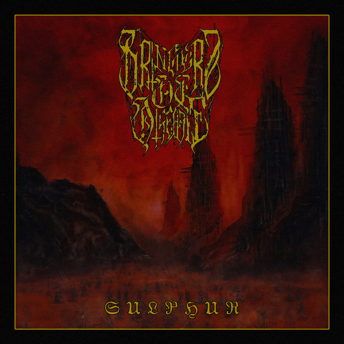

Bringers of Disease emerge with SACRED HEART OF THE ABYSS, the first wound from their debut record Sulphur, set for release April 2026. This is not introduction but ignition — a declaration carved in distortion, ritual weight, and suffocating density.
The track moves with oppressive force. Riffs collapse inward, drums drive with militant repetition, and the dual vocal presence manifests as something closer to invocation than performance. There is no space here, only pressure.
Built under the hands of Louis Benjamin Falgoust II, Logan Madison, Jason Phillips, Zack Simmons, Jeff Wilson, and Jon Woodring, the sound remains deliberate and unrelenting. No ornament. No excess. Only mass and intent.
Released through Disorder Recordings and So Below Productions, Sulphur extends this descent across vinyl, cassette, and digital formats.